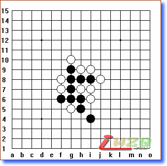
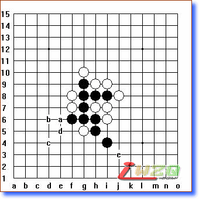
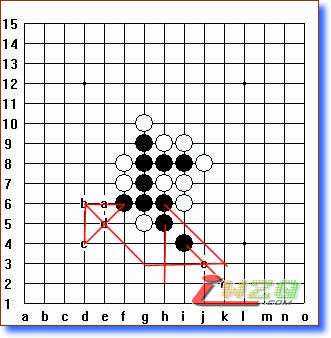
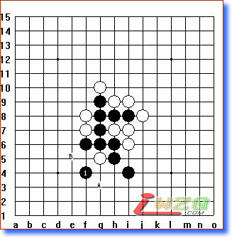
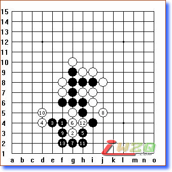
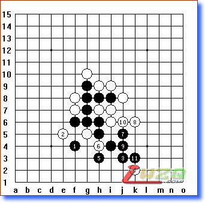
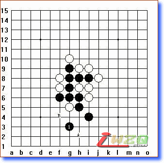
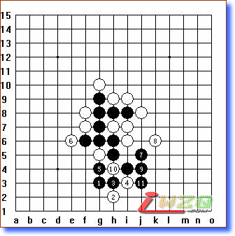
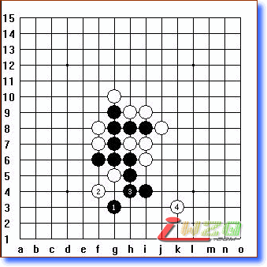

有没有胜？及讲解
#1 有没有胜？及讲解 作者：有志青年 发表时间：2007-8-11 22:34:31
本题原图如下：

讲解如下：
我个人的观点认为，作为习题解答，可能要考虑最复杂的变化比较好，一般来说，最复杂的变化中的个点基本是最强的防守点和最强的进攻点。
我们知道，黑通常情况下比较常见的是采用43胜，那么我们可以在图2中找先找出可以成4的点，如图2：

图2中我们可以看到a—f六个点都是可以直接冲四或跳冲4的点。
找到可以成四的点后，我们再来分析一下大盘形式，白棋最薄弱的地方在左边，其次是是右下方向。但如果单纯的依靠一边的实力，显然很难有胜算的机会，所以我们应该想办法把两边的优势联系起来。那么该如何联系起来呢？其实就是在两块优势之间选择过度性的落点。我们再标出图2中相关可以联系的点的线位如图3：

这样一来整个大盘的概念就很清楚了，很自然的就把能联系左右的点就做出来了，显然F4、G3就是首先可选用的点了，因为且不说个人棋力和计算深度的差异，至少我们最最基础的也可以看到下面一步有后续的三可连，比如F4后，下一步在G4或、H4都可以继续成三。如果是在G3，那么在后一步可以继续做H3然后在C点形成43的叫杀点，同时F4、H3两点也把前边已经有的H5、H6兼顾和利用上了。
现在我们先来说黑选F4后的变化：

黑1F4后，白2有较强的A、B两点可选。
假如白2应A点：则黑有变化如下：

假如白2应B点：则黑有变化如下：

图3中如果黑选G3，则有变化如下：

黑选G3后白同样有A、B两个较强的防守点，假如白选A点，则有变化如下：
这里要特别介绍一下白6，白6不是直接应F5而是应在E6，目的是直接断黑E6冲4的可能，同时打黑3、5手下止位。属于一子断两路。
假如白应图7中的B点，则黑有变化如下：

这里特别需要说明的是白4，我们把这个图分解到白4的时候来看就很清楚了：

白4的应点，我个人的观点认为是最强的的防守点，因为假如应在H3则黑有I5以后J4的简单杀，假如应J3黑有H3、E3、E5、E6的简单杀。所以白4是最强的防守点，白4以后黑有图8的相对复杂的变化。
特别提示：
通过这个习题，我们不妨关注一下各位朋友的解法，能发现有一个比较显著的问题：在计算黑杀的时候，棋手总是会站在黑的立场上去，所以走出的黑相对的比较强，但在对待白棋的态度上明显的就比较随意，表现在选点的随意上，这是初学者在自己与自己对弈的学习过程中另一个很值得注意的问题，因为当你随意选择白的落点时候，黑的优势会因为白落点的不合理性，而突现优势，但在实战的对局中，对方是绝不会向你那样去思考问题的，因为他们是白方，所以会想尽一切办法来阻挡你，所以选择的点会比你随意落下的应点要强的多，这也就会给朋友们在学习中造成错误的方法，并成为一种错误的习惯，所以对棋的研究时候，不论你走的是白还是黑，都要尽自己的最大努力去想出最强的落点。不能从心理上因为自己下黑棋就随意的对待白棋，也不能因为自己下白棋就随意的对待黑棋。
#2 Re:有没有胜？及讲解 作者：古道东疯 发表时间：2007-8-18 8:32:01
讲解透彻，获益匪浅,DUOXIE#3 Re:有没有胜？及讲解 作者：堇色 发表时间：2007-11-3 12:04:30
H3呢能必胜么